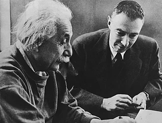
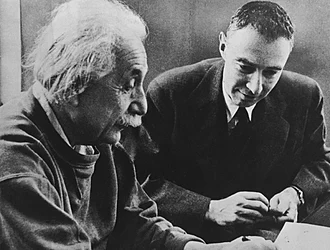

Julius Robert Oppenheimer
The father of the atomic bomb
The man who changed the world
Julius Robert Oppenheimer was an American theoretical physicist and director of the Manhattan Project's Los Alamos Laboratory during World War II. He is often credited as the "father of the atomic bomb"
.jpg ) 

Here is a higlight of the most important things from his life
- At 22 April 1904 was born Julius Robert Oppenheimer in New York City, U.S.
- Oppenheimer earned a bachelor's degree in chemistry from Harvard University in 1925
- Also he earned a doctorate in physics from the University of Göttingen in Germany in 1927
- After research at other institutions, he joined the physics department at the University of California, Berkeley, where he became a full professor in 1936
- In 1942, Oppenheimer was recruited to work on the Manhattan Project, and in 1943 was appointed director of the project's Los Alamos Laboratory in New Mexico
- On July 16, 1945, he was present at the first test of the atomic bomb, Trinity
- n August 1945, the weapons were used against Japan in the bombings of Hiroshima and Nagasaki. That remains the only use of nuclear weapons in an armed conflict.
- On December 16, 2022, Jennifer Granholm, the U.S. Secretary of Energy, ordered that the 1954 decision to revoke Oppenheimer's security clearance be vacated.
Any man whose errors take ten years to correct is quite a man.
J.Robert Oppenheimer
For more information about this topic click here
In the attached link form please express your feedback against the Tribute Page and the informations expressed in it